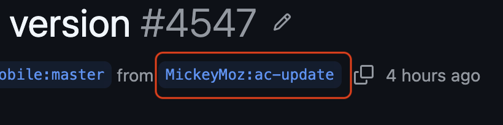

Sometimes on Github, I need to fetch a patch from a fork I don't typically see everyday so I can try it out locally. I use the line at the top of the patch which has a copy button next to it because it's convenient.

The common steps for this are:
- Click the contributor's branch and go to their github fork repository.
- Copy the repository link.
- Add a new git remote with an alias (typically their username).
git fetch <alias>git checkout <alias>/<branch>
Here is a one-liner for it that you can add to your gitconfig:
[alias]
co = "!f() { PNAME=$(basename `git rev-parse --show-toplevel`); OWNER=$(echo $1 | cut -d':' -f1); BRANCH=$(echo $1 | cut -d':' -f2); git fetch git@github.com:$OWNER/$PNAME.git $BRANCH; git checkout FETCH_HEAD; }; f"You might ask why do all of this when the github hub CLI does this for you. I haven't had a need for that CLI and this was the most promising feature it had that ends up being an alias for me.
This fetch also works well with jj too because the fetch and checkout remain headless.
Formatted and commented, it looks less intimidating:
f() {
# Get the repository name from your checkout (assuming it is the
# original directory name as the remote).
PNAME=$(basename `git rev-parse --show-toplevel`);
# Parse out the fork's owner.
# Example: `<owner>:<branch>`
OWNER=$(echo $1 | cut -d':' -f1);
# Parse out the branch name.
# Example: `<owner>:<branch>`
BRANCH=$(echo $1 | cut -d':' -f2);
# Do a fetch of that particular branch using the extracted
# information from above.
# This assumes the remote is hosted on github.
git fetch git@github.com:$OWNER/$PNAME.git $BRANCH;
# Checkout using the alias `FETCH_HEAD` which git provides.
git checkout FETCH_HEAD;
};
# Execute the function!
# It's easier to build a function that holds variables and execute
# rather than in-line it.
f